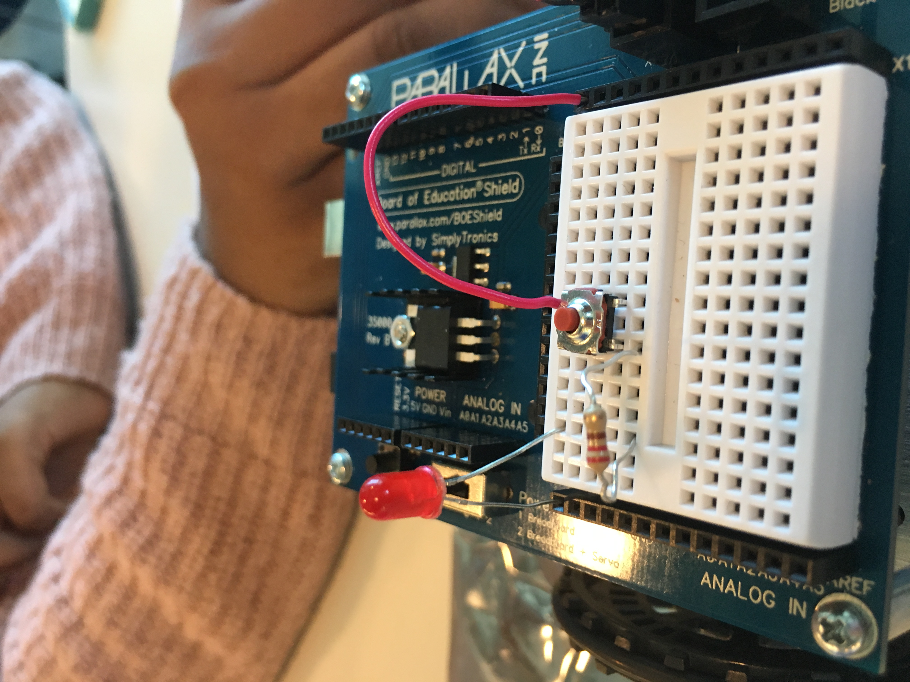

Project: Our First Circuit - 7/10/17
Today, Ashley, Jessie, Priya, and I made our own circuits on the breadboard of a robot. We used a battery, a switch, wires, resistors, and LED lights.
Before we constructed the actual circuit, we drew a diagram on paper and laid out all of the components necessary. Below are photos of our creation!
